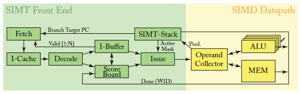
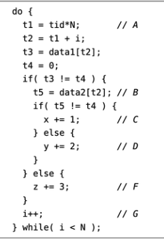
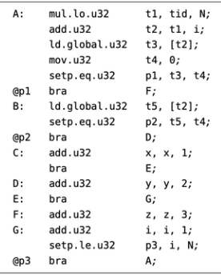
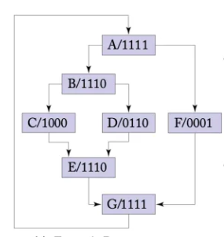
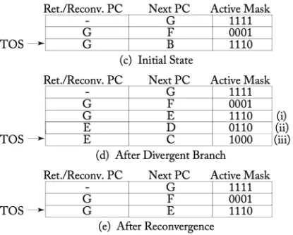
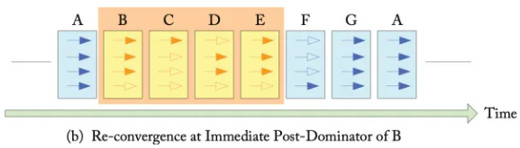

General-Purpose Graphics Processor Architectures
本文最后更新于：2024年8月15日 下午
General-Purpose Graphics Processor Architectures
Abstract && Preface
与CPU相比，GPU可以更加聚焦与计算，因此性能和效率更高。——通用可编程GPU
章节介绍：GPU基本结构与历史 —— GPU编程模型 —— GPU计算核心的体系结构 —— 计算核心与内存系统的交叉研究
Chapter 1: Intro
1.1 计算加速器的前景
过去，计算系统的性能提升大部分依赖于工艺的进步，使得晶体管尺寸缩小，从而提升集成度，使得运行速度更快。
Dennard Scaling：从05年开始晶体管缩放规则失效。因此为了提高性能，需要找到更高效的硬件架构。
hardware specialization：定制化硬件，可以使能效比大幅提高，两大方向：
- 硬件向量化，消除指令处理的开销
- 优化计算过程，减少数据运输开销
计算架构的关键：专业化硬件带来的收益与支持广泛程序所需的灵活性之间的平衡。相比于专用加速器（例如google的TPU），仍然需要GPU这种较为通用的计算硬件。
Turing-complete：图灵完备，只要给足够的时间与内存，GPU可以完成一切运算。
1.2 GPU硬件基础
GPU不会完全取代CPU：GPU不是独立的计算设备，通常来说，CPU负责在GPU上启动计算并负责GPU上的数据传输。当前访问I/O设备或提供OS服务的软件主要还是运行在CPU上（这些软件缺乏大规模并行性），因此，需要首先考虑GPU与CPU的交互。
- 独立GPU：两个U各有各的mem，同时核心通过PCIE总线进行数据传输。注意对于独显来说，两个U的mem的DRAM技术通常是不一样的，CPU的DRAM通常针对低延迟访问进行优化（DDR），而GPU的DRAM通常针对高吞吐进行优化（GDDR）。
- 集成GPU：两个U共享一个cache，cache与一个内存进行数据交互。由于共享内存所以只能采取单一技术，集成式GPU通常搭载在低功耗设备上，因此DRAM通常针对低功耗进行优化（LPDDR）。
一个GPU计算应用会从CPU上开始，通常，该应用程序的CPU部分负责分配和初始化一些数据结构。在旧的N卡和A卡上，CPU需要为CPU和GPU内存中的数据结构分配空间，并协调数据从CPUmem到GPUmem的移动。在新的N卡（Pascal，10系）上的软硬件支持数据从Cmem到Gmem的自动传输，这项技术通过利用虚拟内存支持来实现，NV称之为unified memory。对于集显来说不存在数据mem传输的问题，但是由于两个U共享cache并且有些cache可能是私有的，因此也需要关注缓存一致性问题 (cache-coherence) 。
启动GPU运算一般需要驱动程序完成，在GPU启动运算前，CPU通过驱动程序指定GPU运行哪些代码，这些代码称为内核（kernel），同时，CPU还需要指定线程数、每个线程的数据位置等等。配置完毕后，CPU向GPU发出信号，GPU开始运算。
现代GPU由许多核心（SIMT Core）组成，NV称之为流式多处理器(Streaming Multiprocessor, SM)，AMD称之为计算单元(compute unit)，每个核心都执行一个与此时运行的内核相关的单指令多线程程序，一个核心可以运行上千个线程，这些线程通过暂存区mem进行通信，并使用快速屏障技术（fast barrier operations）进行同步。每个核心同时还有一级指令和一级缓存，这些缓存可以充当带宽过滤器，减少向低级别内存的流量，当拥有大量线程时，可以隐藏由于有时某线程的缓存未命中而访问内存带来的的性能下滑。
高计算吞吐需要高内存带宽的支持，这又对内存系统的并行性提出要求。这种并行性又多通道内存实现，每个通道与内存分区中的最后一级缓存（LLC）相连，GPU核心通过片上互连网络与内存分区相连。也有一些替代的方案，例如Intel的Xeon Phi，就是将LLC直接交由GPU核心分配
对于高并发任务来说，GPU相对超标量无序CPU拥有更高的单位面积性能，因为GPU可以将其芯片面积的大部分专用于算术逻辑单元，并相应的减小控制逻辑的面积。
09年出来一个性能随线程变化的分析模型。模型显示：
- 当少量线程共享大缓存时（如多核CPU），性能会随着线程数量的增加而提高。
- 当线程数增加到缓存无法容纳整个工作集时，性能反而会随着线程数量增加而下降。
- 但是随着线程数量的进一步增加，性能会随着多线程隐藏片外延迟的能力而提高。
GPU就是通过采用多线程来容忍频繁的缓存未命中，提高运算性能。
内存访问不仅降低性能，同时也会提高能耗。新的GPGPU架构的重点是改善内存访问。
1.3 GPU简史
1.4 书籍大纲
- 第二章：编程模型、代码开发过程、编译流程
- 第三章：单个GPU核心（SM）的体系结构
- 第四章：内存系统
- 第五章：其他研究
Chapter 2：编程模型
现代GPU广泛采用SIMD硬件来利用数据级并行，但GPU的计算API（如NV的cuda和AMD的opencl）并不向程序员暴露SIMD的硬件，而是采取类似MIMD的编程模型，允许程序员在GPU上启动大量标量线程。其中的每一个标量线程都有自己独特的执行路径，并都可以访问内存。运行时，GPU上的的SIMD硬件利用线程的规律性和空间局部性，同步启动这些标量线程组，称为SIMT（单指令多线程）
- SIMD：例如两个向量，对两个向量的每一个分量进行相同的op操作，输出为一个向量（在一个线程里，受ALU宽度限制）
- SIMT：与SIMD在一个线程公用一个ALU不同，SIMT有多个线程，每个线程各有各的ALU和自己的数据，但执行的指令相同（但是由于数据不同，执行指令时的控制分支可能会不一样）
2.1 运行模型
为GPU优化的代码很可能在CPU架构上表现不佳。假定一个 单精度标量A * 向量X + 向量Y 的函数实现：
CPU实现
1 | |
GPU-CUDA实现
1 | |
硬件：一个GPU有多个SM，每个SM包含多个SP（Stream Processor）
软件：一个GPU内核对应一个grid，一个grid包含多个CTA。CTA中有多个warp，每个warp包含固定数量的线程数（与SM中SP数量相同）。
GPU在运算时，可能是一个grid独占GPU，也可以多个grid并行跑GPU；SM对应的工作单元是CTA，其中的基本执行单元是warp（即每个SP对应一个warp中的线程），在某个warp受阻时SM可以切换同一个CTA中的其他warp，但只有该CTA执行完，才切换其他CTA
CTA中的线程之间可以通过暂存器内存互相通信（NV称之为共享内存），同步也轻松，同时每个SM中也有一个共享内存，可以分配给在该SM上运行的所有CTA
不同CTA中的线程也可以通过所有线程都能访问的全局地址空间通信，但代价较高
2.2 指令模型
NV的并行线程执行ISA：Parallel Thread eXecution，简称PTX （虚拟指令，类似汇编指令）
GPU运行PTX代码前，需要编译（汇编）成实际的机器指令，NV称此为SASS（Streaming ASSembler），该过程有NV的工具包完成，并没有开放，这使得NV可以在硬件级别提供向后兼容性，每一代都可以重新设计ISA架构
Chapter 3：SIMT核心：指令和寄存器数据流
对传统图形渲染来说，GPU通常需要访问详细的纹理图，这样的数据集因为太大不可能完全缓存在芯片上，因此有必要采用能够维持大片外带宽的GPU架构。所以如今的GPU都往高并发线程发展（大概意思是线程越多越能够隐藏访存损失）。并且，尽管每个线程的片上缓存很小，但因为局部性原理，仍然可以有效减少大量的片外存储访问。
SM的微体系结构，流水线分为SIMT前端和SIMD后端，共3个循环：
- 取值（fetch）循环：fetch、I-Cache、Decode和I-Buffer模块
- 发指（issue）循环：I-Buffer、Scoreboard、issue和SIMT stack模块
- 寄存器访问调度循环：Operand Collector、ALU和Memory模块

3.1 单循环近似
线程的调度单位是warp（AMD称之为wavefronts）。每一个周期，SM选择一个warp进行调度。
单循环中，warp的程序计数器（PC）用于访问指令存储器时查找为warp执行的下一条指令。获得指令后，对指令解码，并找到源操作数寄存器。与此同时，SIMT的执行掩码值也被确定。
在执行掩码与源寄存器可用后，执行以SIMD的方式进行。如果设置了SIMT执行掩码，则每个线程都在与通路关联的功能单元上执行。与现代CPU一样，功能单元通常异构，即不同的单元支持不同的指令运行。
每个功能单元在名义上包含的通路数与warp的线程数相同，但也有一些GPU使用不同的实现，使其中的warp在多个时钟周期内执行。
3.1.1 SIMT执行掩码
现代GPU的关键特性是SIMT执行模型，为程序员提供了单个线程完全独立执行的抽象，这是通过传统谓词（prediction）与SIMT谓词掩码堆栈结合实现的。
SIMT堆栈有助于处理线程可以独立执行时出现的两个关键问题：
- 嵌套控制流
- 完全跳过计算
|  |  |  |
|---|
假设每个warp有四个线程，所有线程都执行了A基本块，之后遵循不同的控制流，有3个线程进入B，1个线程进入F。如此流动，最后所有线程统一到达G。
|  |  |
|---|
堆栈包括三项：重新收敛程序计数器(Reconvergence program counter, RPC)、要执行的下一条指令的地址(Next PC)和活跃掩码(active mask)。warp每次都执行栈顶指针指向的条目的nextPC指向的代码块
- 开始时堆栈中只有一个条目“-，A，1111”。代表所有线程都将进入A。
- 所有4个线程在走完A之后进行分支，此时需要有3处修改：
- 将原先条目的nextPC值修改成分支后的重新汇聚点，对于这次分支B和F，将在G重新汇聚，因此将第一条的nextPC由A修改为G
- 这次分支有3个进入B，1个进入F，因此在堆栈中压入关于B和F的两个条目
- 线程执行栈顶条目“G，B，1110”，掩码是1110代表这行条目对前三个线程active，走完B后进行分支，同理修改原来条目的nextPC，改成最近的重新收敛点E，同时添加两个分支条目。
- 一般改成最近的重新收敛点，是为了从该位置将之前发散的线程以锁步的方式继续执行，便于同步
- 通常来说，在分支过后，最好是先将最多活跃线程的条目先入栈，少活跃线程的条目后入栈，例如d部分，而c部分的例子相反
3.1.2 SIMT死锁与无堆栈SIMT结构
SIMT基于堆栈的实现可能导致死锁：
1 | |
简而言之，对于一个互斥资源，当一个warp的所有线程同时执行互斥锁式访问时，只有一个线程拿到资源，其他线程陷入原地等待。但是，拿到资源的线程在执行完毕后，达到了上文中的重新收敛点，会等待其他所有线程一起到这个点，才能继续执行第三句释放锁。
无堆栈分支的重新收敛机制：warp收敛屏障